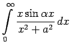
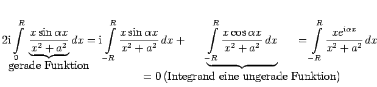
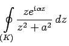
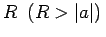
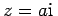
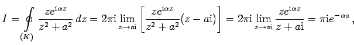
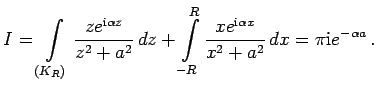
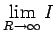
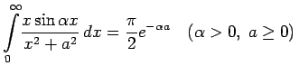

Inhalt Index DeskTop Bronstein

 Funktionentheorie Berechnung reeller Integrale durch Integration im Komplexen Anwendungen des Lemmas von Jordan Beispiele zum Lemma von Jordan
Funktionentheorie Berechnung reeller Integrale durch Integration im Komplexen Anwendungen des Lemmas von Jordan Beispiele zum Lemma von Jordan


Dem gesuchten reellen Integral  wird auf folgende Weise ein komplexes Integral zugeordnet:
.
Das letzte dieser Integrale ist Bestandteil des komplexen Integrals . Die Kurve K besteht aus dem oben definierten Halbkreisbogen KR und dem Stück der reellen Achse zwischen -R und . Der komplexe Integrand hat in der oberen Halbebene nur die singuläre Stelle . Nach dem Residuensatz gilt:
 so daß

Aus  ergibt sich unter Beachtung des Lemmas von JORDAN:
.
Auf ähnliche Weise wurden weitere Integrale der Tabelle Bestimmte Integrale berechnet.